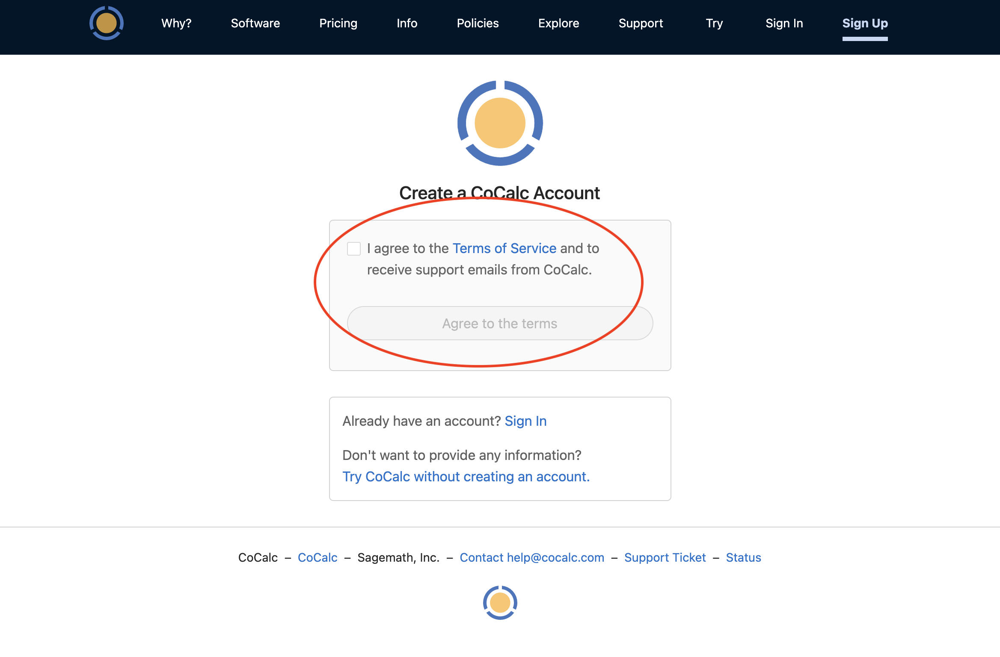
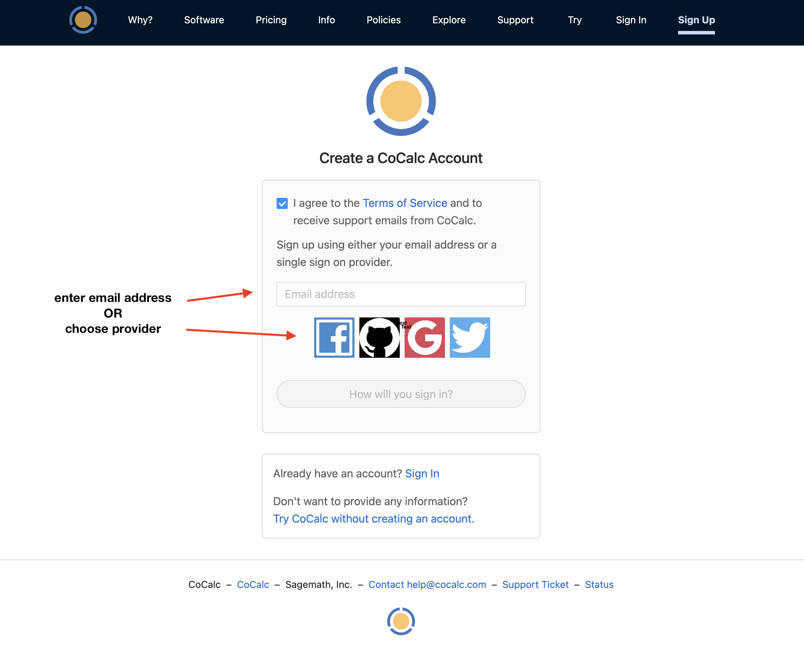
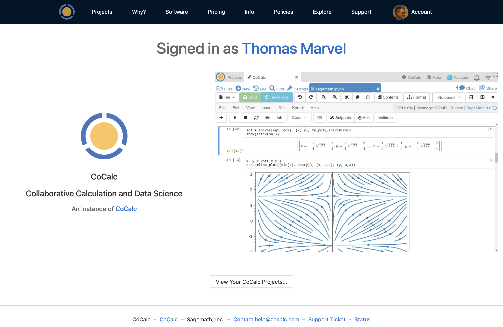
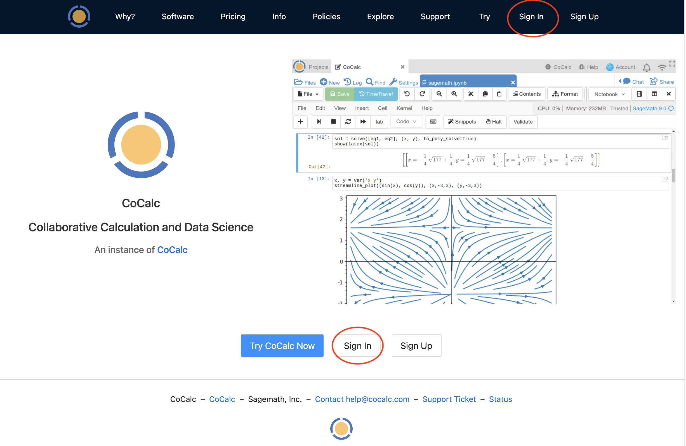
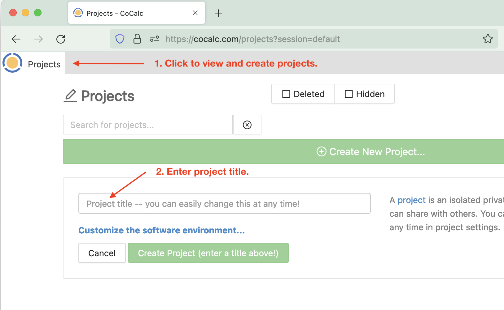

Getting Started
Your First CoCalc Session
Creating an Account
On your first visit to CoCalc.com, you will see the welcome screen. Click either Sign Up button:

At the next screen, check the box to agree to the Terms of Service.
Choose a sign-in method. In addition to signing up with your email address, you have the option of signing up using your credentials for Facebook, Github, Google, or Twitter.
Note
If you don’t want to agree to terms of service at this time, you can click “Try CoCalc without creating an account”.
Resuming a Session
If you closed your browser tab while signed in, you can probably resume your browser session without signing in again the next time you visit https://cocalc.com. Click your name at the top of the “Signed in as” screen or click “View your CoCalc Projects” at the bottom.
Signing in Again
Once you have signed in for the first time, sign-in in will be automatic if you are using the same browser and computer. All you will generally need to do is point your browser to https://cocalc.com and click either “Sign In” button.
- You will need to sign in again if you
connect from a different browser or computer
clear your browser cookies.
sign out
Creating a Project
Now that you are signed in, you can create your first project. Click the Project button at upper left, and then enter a title for your project.
Creating a File
Once you have opened a project, you are ready to create a file.
If your project isn’t upgraded, you will get a red banner warning that your project is running on a trial server. Ignore the warning for now and keep going.
Click (+) New and enter example where it says, Name your file…. Select Jupyter notebook to set the file type. Clicking a button for the type of file causes the file extension to be added automatically.

Running a Jupyter Notebook
Select the “Python 3 (system-wide)” kernel.

Now enter a line of python code in the first cell of the notebook:
print("hello")
And click Run or press Shift-Enter to run the code.

Toolbars
You have used CoCalc’s two main toolbars a bit during your first session. Learn more about them at these locations in this online guide:
Your CoCalc Session
CoCalc will keep track of projects you have open and files that are open within those projects. When you return, you will see the same open projects and files. In addition, if you have a program running and disconnect, it will keep running, with a few exceptions: the program will stop if any of the following occurs:
your project is on a trial server (i.e. does not have Member Hosting upgrade applied) and the server is restarted
you do not edit a file for more than the idle time specified in Project Settings
the program crashes or runs out of memory
Signing Out
You sign out by using Account → Preferences → Sign Out…
Next Steps
Continue your tour of CoCalc with these topics:
Subscribe to CoCalc and upgrade your projects here:
Additional Resources
In addition the Index in this User Manual, if you have specific questions you can check the CoCalc Wiki. Most of the CoCalc Wiki content has been moved into this User Manual.
CoCalc Wiki search
CoCalc Wiki index page <https://github.com/sagemathinc/cocalc/wiki/Home>
If you would like to chat with other CoCalc users, visit our Discord server: https://discord.gg/nEHs2GK
There is also a Google discussion group for CoCalc. You can view it online or use it as a mailing list: https://groups.google.com/forum/#!forum/cocalc
Statements
CoCalc GDPR Compliance Statement: https://github.com/sagemathinc/cocalc/wiki/GDPR
CoCalc Accessibility Statement: https://github.com/sagemathinc/cocalc/wiki/AccessibilityStatement
CoCalc Voluntary Product Accessibility Template (VPAT): https://cocalc.com/policies/accessibility

{kind=link}
{kind=link}
{kind=link}
{kind=link}
{kind=link}